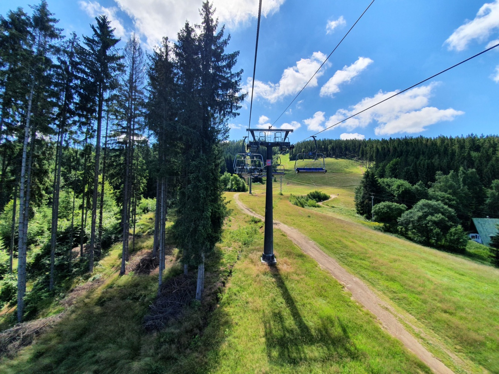

Výlet do Jizerských hor jsme měli v plánu už loni na podzim, kdy jsme měli vyhlídnuté ubytování a naplánované atrakce. Nicméně jak jsme zmiňovali už v článku o Kutné Hoře, počasí tomu chtělo jinak. Přece jen pět propršených dní z pěti na horách nemá moc smysl.
K programu Jizerek jsme se tedy opět vrátili až letos, kdy jsme řešili, kam se podíváme během červencových svátků. Volno jsme si prodloužili i o zbylé tři dny v týdnu a našli jsme si ubytování přes booking.com ve vysoce hodnoceném penzionu Věra v Tanvaldu. Vzhledem k tomu, že nás z Brna čekalo přes 350 km, zvolili jsme odjezd až v sobotních dopoledních hodinách. Cesta ubíhala bez problémů, provoz byl plynulý, jen s pár zastávkami na kafe a protažení. Posléze jsme zaparkovali přímo před penzionem, kde jsme narazili na pana domácího. Ten nás rovnou provedl objektem, objednali jsme si snídani na další den a začali jsme plánovat menší vycházku po okolí.
Z postele nás každodenně spolehlivě vytáhla brzká snídaně, která byla od 8 do 9. Sešli jsme pár schodů dolů do přízemí, kde na nás čekalo to, co jsme si den předtím objednali. Tedy míchaná vajíčka, toasty, párky nebo musli s jogurtem a k tomu dobrá káva. Díky brzkým snídaním jsme tedy i na výlety vyráželi na naše poměry relativně brzy. V neděli nás čekal přejezd do necelých 30 km vzdálených Lázních Libverda, odkud jsme měli naplánovaný start trailů. Cesta autem nebyla zas tak dlouhá, nicméně v Desné byla rozkopaná silnice a na semaforu jsme se dost zdrželi. Další zpomalení nás čekalo v úzkých serpentinách směrem na Bílý Potok, kde se nedalo jet rychleji než třicítkou. Zaparkovali jsme asi za 70 Kč na parkovišti u Obřího sudu, kde nás paní ujistila, že nám nosič na kola bude hlídat. Ještě jsme stihli nanuka a vyrazili jsme.
Lokalita čítá opravdu velké množství červených, černých i modrých stezek, které se táhnou až do sousedního Polska. Cesty vedou krásnými lesy, úseky nejsou nijak zvlášť technické, naopak jsou poměrně přírodní. V některých případech je to však i nevýhoda, pokud se zde projíždíte zrovna po deštích, kdy se na cestách tvoří menší i větší kaluže. Nemalá část cest vede také kopcovitým terénem, takže sjezdy nejsou úplně zadarmo. V rámci modré trasy jsme se dostali i na území Polska, kde jsme náhodou objevili bývalou astronomickou věž, která později sloužila také jako restaurace. Celkově hodnotíme traily na výbornou. Najeli jsme tu bezmála 45 km, ale rozhodně jsme neotestovali veškeré trasy.
Po jednodenní cyklistické přestávce, kterou jsme využili na návštěvu Liberce a jeho okolí, jsme se vydali opět na kola. Tentokrát jsme chtěli otestovat bikepark, který je umístěný přímo na sjezdovce na Tanvaldském Špičáku. Tentokrát to nebylo tak daleko, takže jsme zvolili variantu dojet na místo rovnou na kolech. Čekalo nás nějaké to převýšení, ale nahoru jsme se pak vyvezli lanovkou a ušetřili tak nohy na odpoledne. Dají se tu koupit buď samostatné jízdy nebo pak po třech a více. S koly nám na lanovce pomohli a my si užívali poměrně dlouhou zhruba 15 minutovou jízdu nahoru. Vzhledem k blížící se polední přestávce jsme se tu dlouho nerozhlíželi a jeli rovnou dolů. Trail byl divočejší než pod Smrkem, plný klopenek a skoků, ale v přiměřené rychlosti téměř bezproblémový. Při další jízdě už jsme tolik nespěchali, takže jsme si vychutnali krásné výhledy z kamenné vyhlídky poblíž vrcholu, kde je mimo jiné i stejnojmenná rozhledna. Po krátké pauze a svačině jsme se vydali na druhý trail, který byl velmi podobný tomu prvnímu.
Dnešní cyklovýlet však tímto nekončil. Pokračovali jsme dál dlouhým stoupáním na protrženou přehradu, což je místo, kde se před lety protrhla hráz a voda zatopila níže položenou vesničku Desná a přilehlé okolí. Nicméně nyní je to krásné slunné místo s pěknou vegetací a přilehlou hospůdkou vhodnou k občerstvení po vyčerpávajícím stoupání. Kopce zdaleka neskončily a mi si vyšlápli horskou stezkou další várku výškových metrů až na sklářskou osadu Jizerka (850 m. n. m.), která je nejvýše položenou obcí v ČR. Den se pomalu posunoval k podvečerním hodinám a my měli v plánu ještě zdolání vrcholu Hvězda s rozhlednou Štěpánka. Krásná kamenná rozhledna z roku 1892, která se tyčí nad obcí Příchovice nabízí úchvatný pohled na okolní vesničky i pohoří a rozhodně stojí za návštěvu. Ještě nám zbývalo posledních pár kilometrů, které už naštěstí byly jen z kopce dolů.